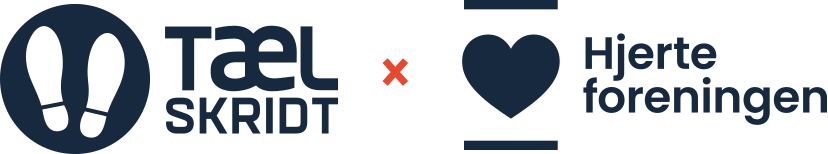
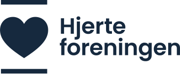

Vi har gennemgået fire års adfærdsdata fra både marketingsitet og platformen for at forstå målgruppen og finde de højeste-løftestang-områder for den næste kampagne.
4,5 års data om hvem målgruppen er — demografi, geografi, sprog, interesser og kanalmix.
Detaljeret adfærd: scroll-dybde, klik, enhedsmønstre, timing under én fuld kampagne-cyklus.
Adfærd inde i app.taelskridt.dk: hvordan brugerne logger skridt, navigerer statistik, bruger lykkehjul, redigerer profil.
Bemærk: Clarity er pt. inaktiv på begge flader. Geninstallation er højeste prioritet inden TS3.
En dansk kvinde i slut-40'erne til midt-60'erne, der bor i eller omkring København, arbejder på en dansk offentlig eller privat arbejdsplads, og betragter gang som en del af et godt liv — ikke som motion.
Platformen viser ægte engagement (4 min pr. session, 64% scroll-dybde) men også ægte friktion. Tre sider trækker hovedparten af problemerne.
Marketingsitet har en helt anden type problem: scroll-dybde på kun 19,8% — to tredjedele af forsiden bliver aldrig set. Vi har det allerede med i planen.
Rangeret efter løftestang. De første tre er de største — alt andet bygger ovenpå.

Marketing & partnerskabSamlet marketingbudget: 30.000 kr fordelt på fem måneder. Vægtet til august, hvor intentionen er højest.
15 uger fra nu (1. juni) til kampagnen slutter (13. september), inkl. en realistisk sommerpause.
Hent Excel-filen med den fulde plan: ugentligt overblik, UX-prioriteter, marketing-aktiviteter, budget og succeskriterier — 16 uger detaljeret op.
Hent planen (Excel, 18 KB)